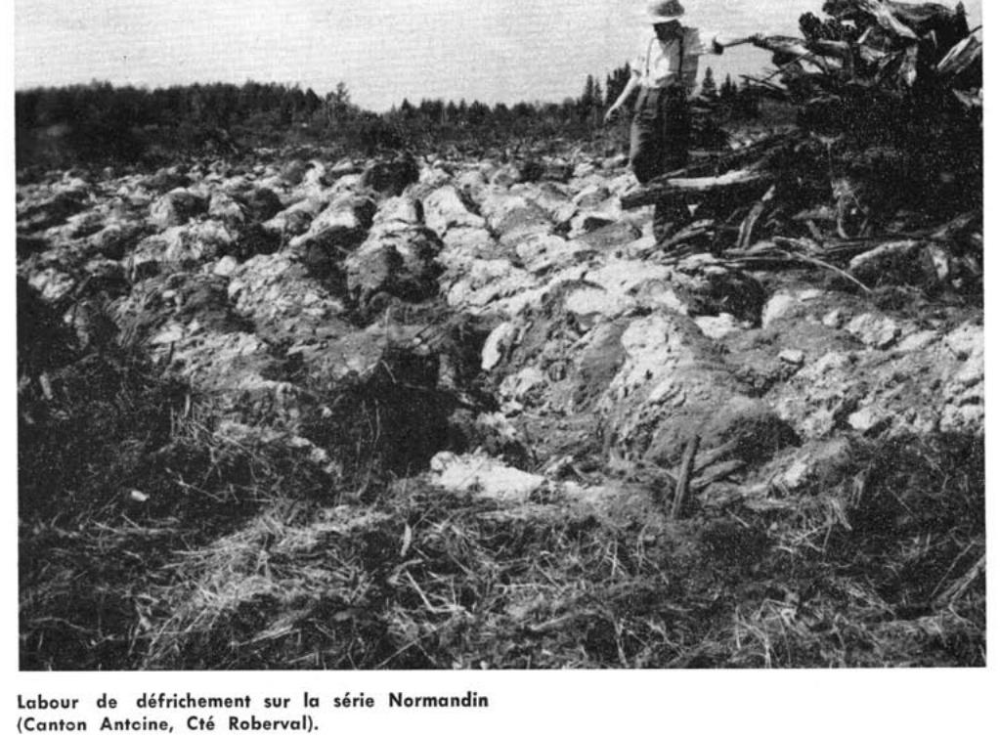

Identification & Caractéristiques Générales
La série Normandin s'est développée sur des dépôts minéraux lacustres à texture fine, constitués principalement de sédiments argilo-limoneux mis en place dans les bassins de proglaciation ou les plaines subhorizontales de basses terres. Ces matériaux parentaux, caractérisés par une proportion dominante de limon et d'argile fine, occupent des positions topographiques de plaine unie à subhorizontale, où les pentes sont généralement faibles à nulles, restreignant ainsi le ruissellement superficiel et l'évacuation naturelle des eaux de surface.
Le profil morphologique de ce sol présente une texture d'argile limoneuse marquée par une compacité prononcée et une faible proportion de matière organique. Le drainage naturel est jugé modérément à imparfaitement drainé, tandis que la perméabilité interne est lente en raison de la compacité de la matrice minérale. Cette compacité, combinée à une carence en colloïdes organiques et à une proportion élevée de fractions limoneuses, favorise le développement d'une structure massive et la formation potentielle d'une croûte de battance ou d'une semelle de travail (« siltpan ») dans les horizons supérieurs. Cette condition restreint la porosité structurale et la pénétration racinaire, tout en induisant une sensibilité marquée aux périodes de sécheresse estivale par suite d'une disponibilité hydrique utile limitée.
Sur le plan agronomique, la série Normandin est mise en valeur principalement pour la grande culture et la production fourragère liée à l'industrie laitière. Les limitations majeures à la mise en culture résident dans le tassement structural, le manque de stabilité des agrégats, la faible teneur en matière organique ainsi que les risques d'érosion en nappe sur les faibles pentes. La mise en valeur optimale de ces sols requiert l'installation d'un réseau de drainage souterrain intensif pour améliorer la portance et la battance, des apports réguliers en amendements organiques pour restaurer la structure, ainsi qu'un travail du sol raisonné afin d'atténuer la compaction de surface et d'améliorer la friabilité de la couche labourée.
Caractères Distinctifs & Morphologie Génétique (Pédologie de la région du Lac-Sa — Page 42)
- Topographie : horizontale à subhorizontale
- Drainage : imparfait à mauvais
- Grand-groupe génétique : gleysol éluvié
- Degré d'érosion : susceptible d'érosion en nappe (W1)
- Classe d'utilisation : 2
- Association géographique : séries Alma, Taillon, Pelletier, Proulx, Kénogami, Albanel, Mistouc, Taché; terres noires sur argiles
- Végétation naturelle : bouleaux, trembles, aulnes, grands saules, sapins, épinettes, etc.
Classification Taxonomique & Environnement Pédologique
| Ordre Pédologique | Gleysolique |
|---|---|
| Grand Groupe (SCSS) | Gleysol orthique |
| Sous-Groupe Taxonomique | Gleysol orthique |
| Famille Pédologique | Argileuse-fine, mixte argileux, neutre |
| Mode de Dépôt Parental | Marin |
| Classe de Drainage Naturel | Imparfaitement drainé |
| Régime Thermique & Humidité | Frais / Perhumide |
Description Morphologique du Profil Type
Séquence génétique des horizons pédologiques caractérisant le profil type représentatif de la série Normandin :
Profil représentatif — Pédologie de la région du Lac-Sa
✓ Source : Pédologie de la région du Lac-Sa — Page 42Couleur Munsell : Non précisée
Structure & Consistance : Polyédrique à granulaire
Description morphologique : Matière organique ligneuse, mousses, bois brûlé; pH: 4.9.
Couleur Munsell : 10YR 4/2
Structure & Consistance : Polyédrique à granulaire
Description morphologique : Loam limono-argileux brun-gris foncé (10YR 4/2) avec points noirs de bois brûlé; racines et débris ligneux (bois); pH: 4.9.
Couleur Munsell : 10YR 5/2, 7.5YR 5/8
Structure & Consistance : Polyédrique à granulaire
Description morphologique : Argile limoneuse brun-gris (10YR 5/2); massive, cassure grossière, consistance caséeuse; taches de rouille (fer oxydé) brun vif (7.5YR 5/8); pH: 5.4.
Couleur Munsell : 2.5Y 6/2
Structure & Consistance : Polyédrique à granulaire
Description morphologique : Argile limoneuse brun-gris clair (2.5Y 6/2) avec taches de rouille de même teinte que Bg 1 mais moins abondantes; clivage plus facile à obtenir que dans l'horizon précédent mais semblablement la même consistance; pH: 6.0.
Couleur Munsell : 2.5Y 5/4, 5Y 5/3
Structure & Consistance : Polyédrique
Description morphologique : Argile limoneuse olive clair (2.5Y 5/4) à olive (5Y 5/3); structure polyédrique; horizon moins massif que les deux précédents, plus friable; pH: 7.0.
Profils Photographiques & Planches de Terrain
Documents iconographiques, figures pédologiques et coupes de terrain documentées dans les mémoires d'inventaire pour de la série Normandin :

Propriétés Physico-Chimiques & Analyses de Laboratoire
| Horizon | Prof. limite | pH (H₂O) | M.O. % | C tot. % | N tot. % | C.E.C. (cmol/kg) | Sable % | Limon % | Argile % | P Meh3 (mg/kg) | K (cmol/kg) | Ca (cmol/kg) | MVA (g/cm³) |
|---|---|---|---|---|---|---|---|---|---|---|---|---|---|
| Ap1 | — | 6.21 | 4.42 | 2.56 | 0.17 | 21.0 | 1.9 | 53.3 | 44.8 | 36.5 | 0.46 | 10.14 | 1.16 |
| Ap2 | — | 6.2 | 4.22 | 2.45 | 0.15 | 20.8 | 1.7 | 53.0 | 45.3 | 37.0 | 0.45 | 10.13 | 1.29 |
| B | — | 6.46 | 2.22 | 1.29 | 0.09 | 18.0 | 1.4 | 51.5 | 47.1 | 23.1 | 0.38 | 8.52 | 1.61 |
Particularités Régionales, Phases & Variantes Pédologiques
Déclinaisons régionales, faciès texturaux, phases d'érosion ou de pierrosité et variantes cartographiées par étude pour de la série Normandin :
| Étude Régionale | Symbole | Appellation / Phase / Variante | Différenciation avec la série type (Analyse pédologique) |
|---|---|---|---|
| Comté de Chicoutimi | N |
Normandin argile | Modalité modale de référence (type de base de la série). |
| Pédologie de la région du Lac-Saint-Jean | N |
Normandin argile | Conforme à la série type de référence (caractéristiques texturales et drainage identiques). |
Distribution Pédo-Paysagère & Représentativité Cartographique (Couverture PPS 2026)
- Taillon loam (TLL) — co-occurrente dans 110 polygone(s)
- Alma loam (ALM) — co-occurrente dans 93 polygone(s)
- Albanel argile (ALB) — co-occurrente dans 29 polygone(s)
Aptitudes Agronomiques, Hydropédologie & Conservation des Sols
Indicateurs Hydropédologiques & Vulnérabilité à l'Érosion (BDHP 2026)
Interprétation BDHP : Potentiel de ruissellement modérément élevé. Faible taux d'infiltration, présence d'horizons ralentissant le drainage descendant.
Classement selon l'Inventaire des Terres du Canada (ITC / CLI) : Classe 2c.
- Potentiel agricole : Terroir adapté aux cultures régionales selon la texture dominante et la régie de drainage.
- Contraintes majeures : Imparfaitement drainé. Risque d'engorgement temporaire ou d'excès d'eau printanier.
- Gestion & Aménagement : Drainage souterrain ou superficiel préconisé sur les terres planes. Chaulage et apport organique régulier selon les bilans agronomiques.
- Cultures adaptées : Grandes cultures (maïs, soya, céréales), prairies fourragères et cultures maraîchères selon le contexte géomorphologique.